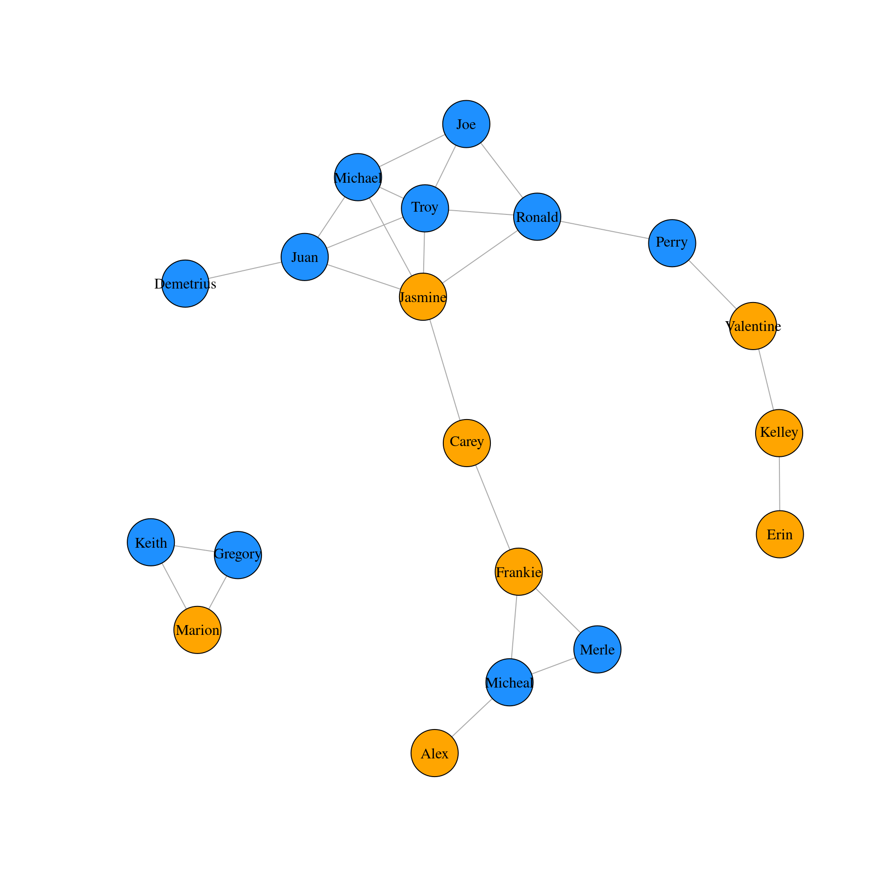
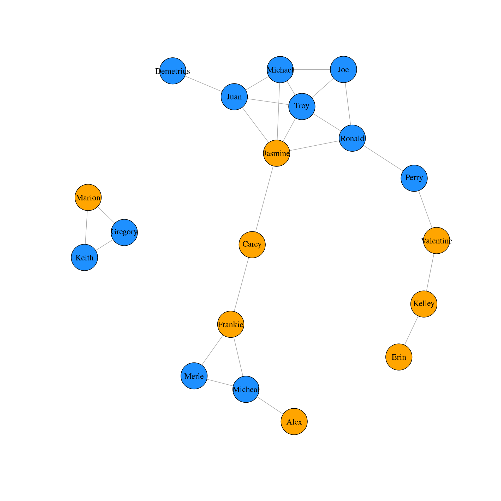
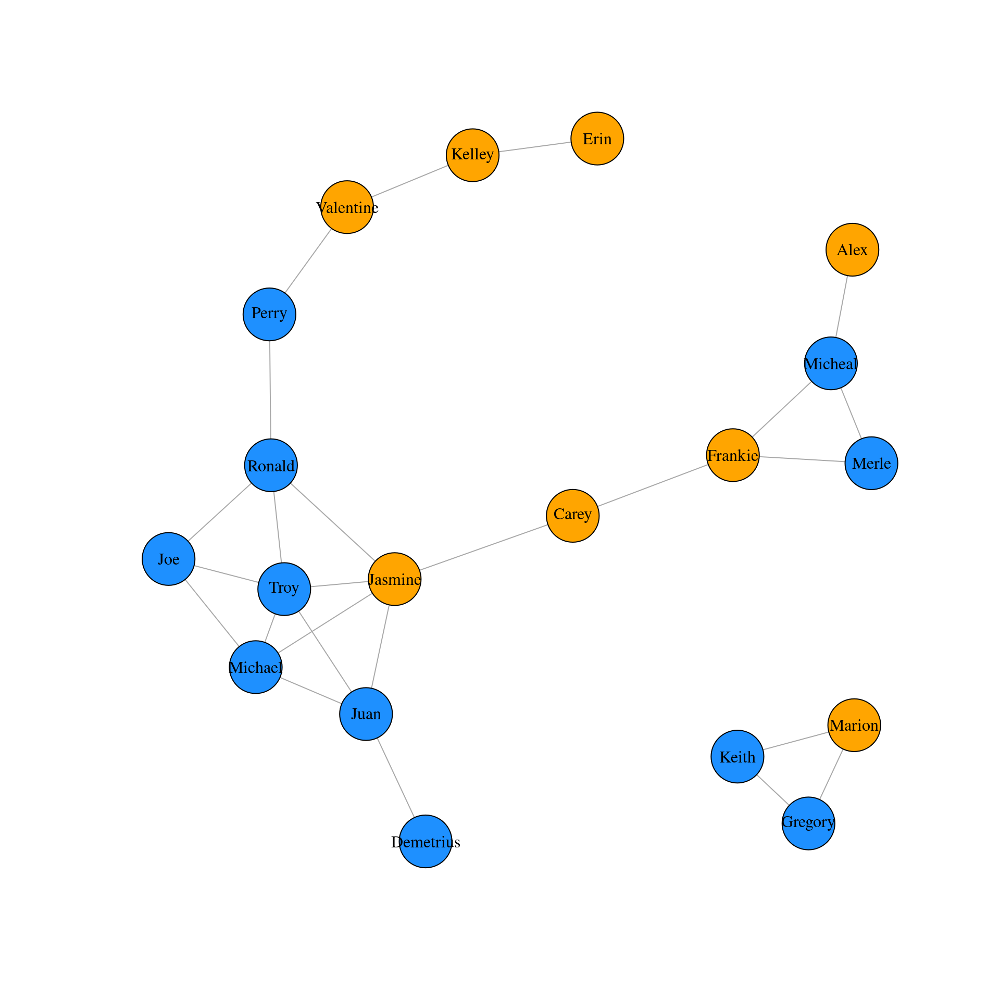
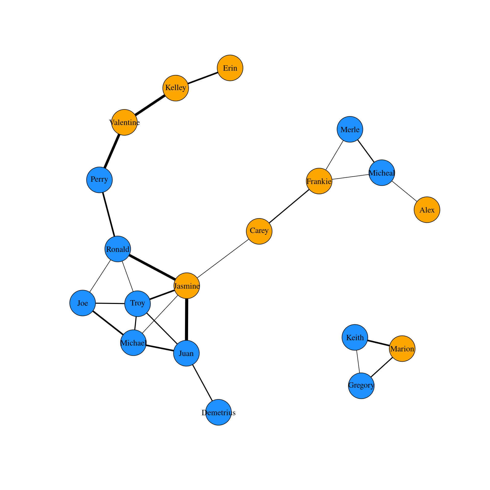
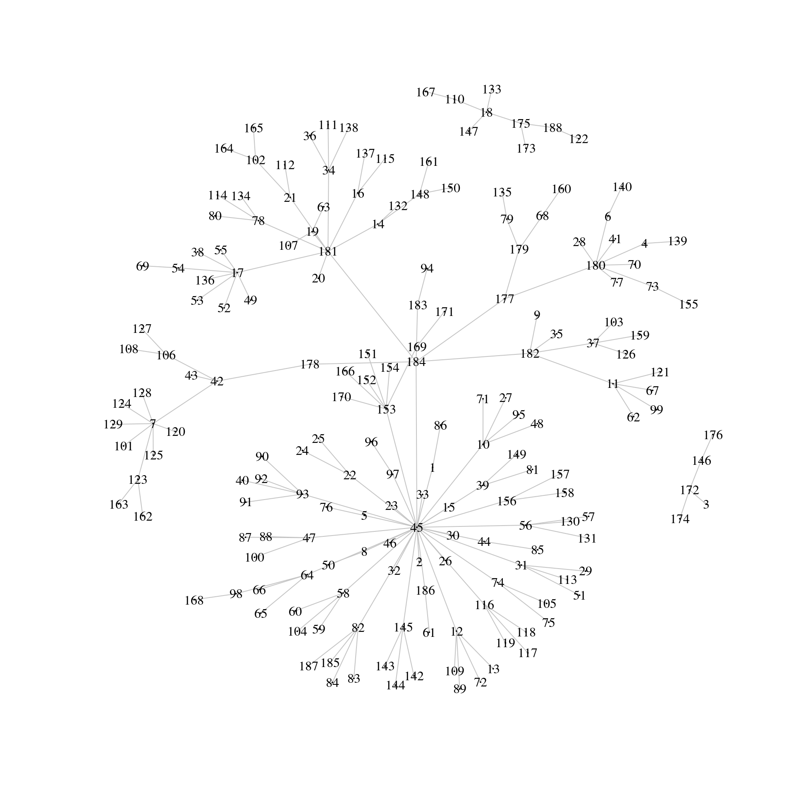
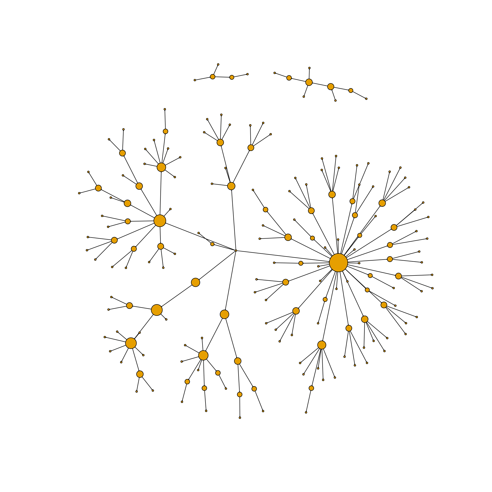
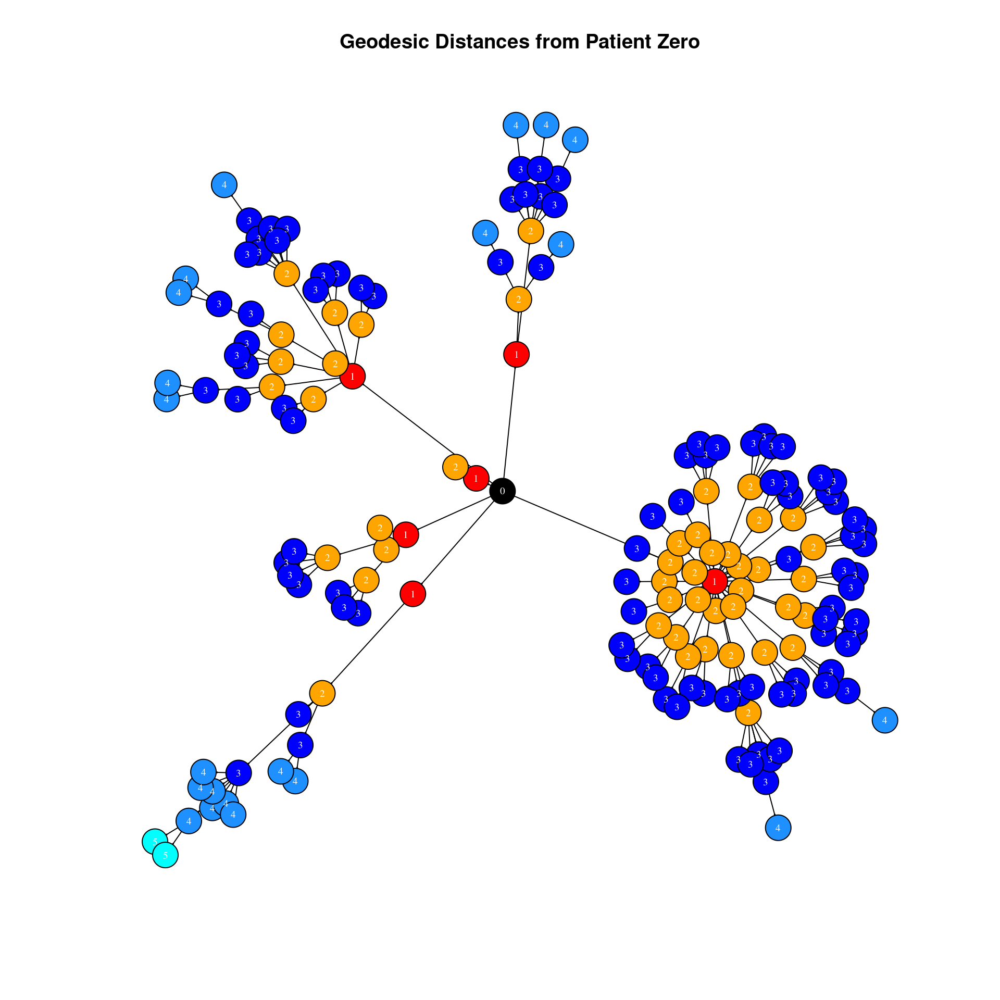
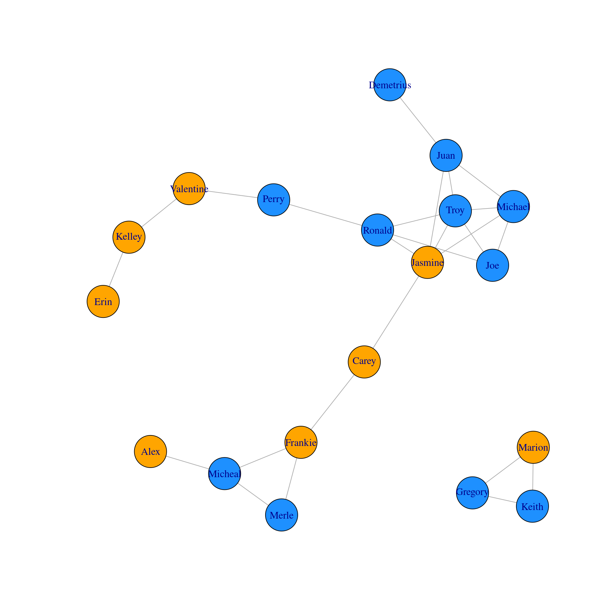
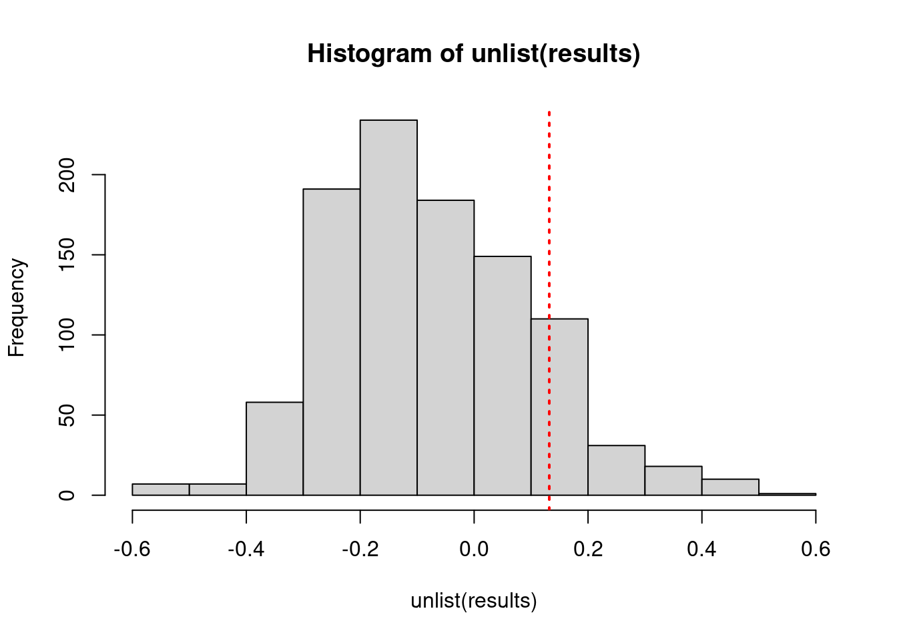
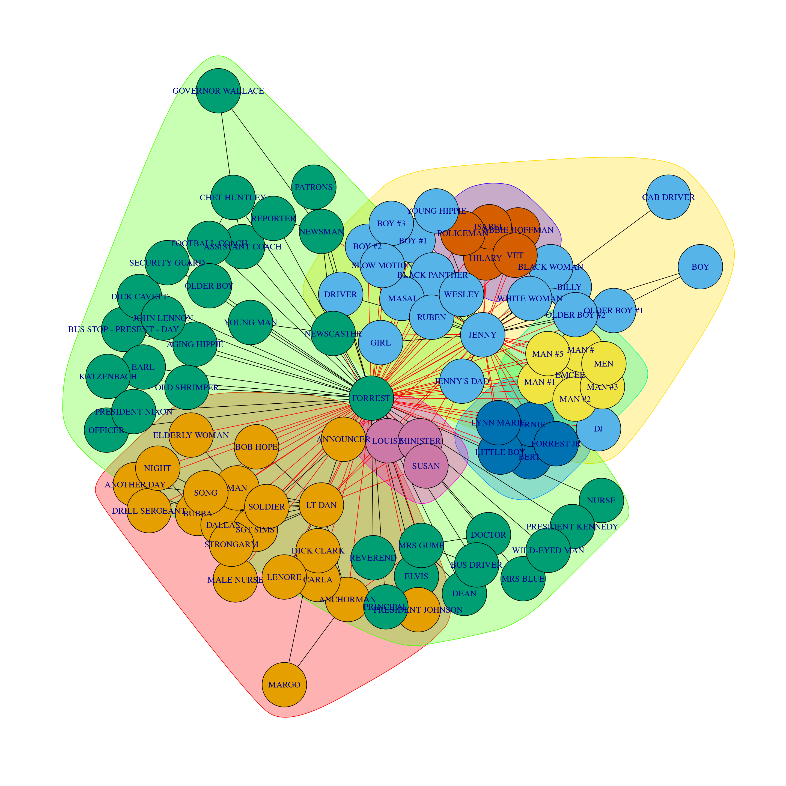

library(tidyverse)
library(data.table)
library(igraph)
library(knitr)
friends <- fread("friends.csv")Network analysis in R
Creating an igraph object
Here you will learn how to create an igraph ‘object’ from data stored in an edgelist. The data are friendships in a group of students. You will also learn how to make a basic visualization of the network.
Each row of the friends dataframe represents an edge in the network.
# Inspect the first few rows of the dataframe 'friends'
head(friends) %>% kable| name1 | name2 |
|---|---|
| Jessie | Sidney |
| Jessie | Britt |
| Sidney | Britt |
| Sidney | Donnie |
| Karl | Berry |
| Sidney | Rene |
# Convert friends dataframe to a matrix
friends.mat <- as.matrix(friends)
# Convert friends matrix to an igraph object
g <- graph.edgelist(friends.mat, directed = FALSE)
# Make a very basic plot of the network
plot(g)Counting vertices and edges
A lot of basic information about a network can be extracted from an igraph object. In this exercise you will learn how to count the vertices and edges from a network by applying several functions to the graph object g. Each row of the friends dataframe represents an edge in the network.
# Subset vertices and edges
V(g)+ 16/16 vertices, named, from c97b400:
[1] Jessie Sidney Britt Donnie Karl Berry Rene Shayne Elisha
[10] Whitney Odell Lacy Eugene Jude Rickie Tommy E(g)+ 27/27 edges from c97b400 (vertex names):
[1] Jessie --Sidney Jessie --Britt Sidney --Britt Sidney --Donnie
[5] Karl --Berry Sidney --Rene Britt --Rene Sidney --Shayne
[9] Sidney --Elisha Sidney --Whitney Jessie --Whitney Donnie --Odell
[13] Sidney --Odell Rene --Whitney Donnie --Shayne Jessie --Lacy
[17] Rene --Lacy Elisha --Eugene Eugene --Jude Berry --Odell
[21] Odell --Rickie Karl --Odell Britt --Lacy Elisha --Jude
[25] Whitney--Lacy Britt --Whitney Karl --Tommy # Count number of edges
gsize(g)[1] 27# Count number of vertices
gorder(g)[1] 16Node attributes and subsetting
In this exercise you will learn how to add attributes to vertices in the network and view them.
genders <- c("M", "F", "F", "M", "M", "M",
"F", "M", "M", "F", "M", "F",
"M", "F", "M", "M")
ages <- c("18", "19", "21", "20", "22",
"18", "23", "21", "22", "20",
"20", "22", "21", "18", "19",
"20") %>% as.numeric()
# Inspect the objects 'genders' and 'ages'
genders [1] "M" "F" "F" "M" "M" "M" "F" "M" "M" "F" "M" "F" "M" "F" "M" "M"ages [1] 18 19 21 20 22 18 23 21 22 20 20 22 21 18 19 20# Create new vertex attribute called 'gender'
g <- set_vertex_attr(g, "gender", value = genders)
# Create new vertex attribute called 'age'
g <- set_vertex_attr(g, "age", value = ages)
# View all vertex attributes in a list
vertex_attr(g)$name
[1] "Jessie" "Sidney" "Britt" "Donnie" "Karl" "Berry" "Rene"
[8] "Shayne" "Elisha" "Whitney" "Odell" "Lacy" "Eugene" "Jude"
[15] "Rickie" "Tommy"
$gender
[1] "M" "F" "F" "M" "M" "M" "F" "M" "M" "F" "M" "F" "M" "F" "M" "M"
$age
[1] 18 19 21 20 22 18 23 21 22 20 20 22 21 18 19 20# View attributes of first five vertices in a dataframe
V(g)[[1:5]] + 5/16 vertices, named, from c97b400:
name gender age
1 Jessie M 18
2 Sidney F 19
3 Britt F 21
4 Donnie M 20
5 Karl M 22Edge attributes and subsetting
In this exercise you will learn how to add attributes to edges in the network and view them. For instance, we will add the attribute ‘hours’ that represents how many hours per week each pair of friends spend with each other.
hours <- c("1", "2", "2", "1", "2", "5",
"5", "1", "1", "3", "2", "1", "1",
"5", "1", "2", "4", "1", "3", "1",
"1", "1", "4", "1", "3", "3", "4") %>% as.numeric()
# View hours
hours [1] 1 2 2 1 2 5 5 1 1 3 2 1 1 5 1 2 4 1 3 1 1 1 4 1 3 3 4# Create new edge attribute called 'hours'
g <- set_edge_attr(g, "hours", value = hours)
# View edge attributes of graph object
edge_attr(g)$hours
[1] 1 2 2 1 2 5 5 1 1 3 2 1 1 5 1 2 4 1 3 1 1 1 4 1 3 3 4# Find all edges that include "Britt"
E(g)[[inc('Britt')]] + 5/27 edges from c97b400 (vertex names):
tail head tid hid hours
2 Jessie Britt 1 3 2
3 Sidney Britt 2 3 2
7 Britt Rene 3 7 5
23 Britt Lacy 3 12 4
26 Britt Whitney 3 10 3# Find all pairs that spend 4 or more hours together per week
E(g)[[hours>= 4]] + 6/27 edges from c97b400 (vertex names):
tail head tid hid hours
6 Sidney Rene 2 7 5
7 Britt Rene 3 7 5
14 Rene Whitney 7 10 5
17 Rene Lacy 7 12 4
23 Britt Lacy 3 12 4
27 Karl Tommy 5 16 4Visualizing attributes
In this exercise we will learn how to create igraph objects with attributes directly from dataframes and how to visualize attributes in plots. We will use a second network of friendship connections between students.
friends1_edges <- read_csv("friends1_edges.csv")
friends1_nodes <- read_csv("friends1_nodes.csv")
# Create an igraph object with attributes directly from dataframes
g1 <- graph_from_data_frame(d = friends1_edges,
vertices = friends1_nodes,
directed = FALSE)
# Subset edges greater than or equal to 5 hours
E(g1)[[hours>=5]] + 4/25 edges from 611175d (vertex names):
tail head tid hid hours
5 Kelley Valentine 3 6 5
8 Ronald Jasmine 4 8 5
12 Valentine Perry 6 15 5
15 Jasmine Juan 8 9 6# Set vertex color by gender
V(g1)$color <- ifelse(V(g1)$gender == "F", "orange", "dodgerblue")
# Plot the graph
plot(g1, vertex.label.color = "black")
Quiz on attributes
- What term is typically used to describe the relative strength of edges?
- weight
Igraph network layouts
The igraph package provides several built in layout algorithms for network visualization. Depending upon the size of a given network different layouts may be more effective in communicating the structure of the network. Ideally the best layout is the one that minimizes the number of edges that cross each other in the network. In this exercise you will explore just a few of the many default layout algorithms. Re-executing the code for each plot will lead to a slightly different version of the same layout type. Doing this a few times can help to find the best looking visualization for your network.
library(igraph)
# Plot the graph object g1 in a circle layout
plot(g1, vertex.label.color = "black", layout = layout_in_circle(g1))
# Plot the graph object g1 in a Fruchterman-Reingold layout
plot(g1, vertex.label.color = "black", layout = layout_with_fr(g1))
# Plot the graph object g1 in a Tree layout
m <- layout_as_tree(g1)
plot(g1, vertex.label.color = "black", layout = m)# Plot the graph object g1 using igraph's chosen layout
m1 <- layout_nicely(g1)
plot(g1, vertex.label.color = "black", layout = m1)
Visualizing edges
In this exercise you will learn how to change the size of edges in a network based on their weight, as well as how to remove edges from a network which can sometimes be helpful in more effectively visualizing large and highly clustered networks. In this introductory chapter, we have just scratched the surface of what’s possible in visualizing igraph networks. You will continue to develop these skills in future chapters.
# Create a vector of weights based on the number of hours each pair spend together
w1 <- E(g1)$hours
# Plot the network varying edges by weights
m1 <- layout_nicely(g1)
plot(g1,
vertex.label.color = "black",
edge.color = 'black',
edge.width = w1,
layout = m1)
# Create a new igraph object by deleting edges that are less than 2 hours long
g2 <- delete_edges(g1, E(g1)[hours < 2])
# Plot the new graph
w2 <- E(g2)$hours
m2 <- layout_nicely(g2)
plot(g2,
vertex.label.color = "black",
edge.color = 'black',
edge.width = w2,
layout = m2)Directed igraph objects
In this exercise you will learn how to create a directed graph from a dataframe, how to inspect whether a graph object is directed and/or weighted and how to extract those vertices at the beginning and end of directed edges.
measles <- read.csv("measles.csv")
# Get the graph object
g <- graph_from_data_frame(measles, directed = TRUE)
# is the graph directed?
is.directed(g)[1] TRUE# Is the graph weighted?
is.weighted(g)[1] FALSE# Where does each edge originate from?
table(head_of(g, E(g)))
1 2 3 4 5 6 7 8 9 10 11 12 13 14 15 17 18 19 20 21
1 1 1 1 1 1 1 1 1 1 1 1 1 1 1 1 1 1 1 1
22 23 24 25 26 27 28 29 30 31 32 33 34 35 36 37 38 39 40 41
1 1 1 1 1 1 1 1 1 1 1 1 1 1 1 1 1 1 1 1
42 43 44 45 46 47 48 49 50 51 52 53 54 55 56 57 58 61 62 63
1 1 1 1 1 1 1 1 1 1 1 1 1 1 1 1 1 1 1 1
64 65 66 67 68 69 70 71 72 73 74 75 76 77 78 79 80 81 82 83
1 1 1 1 1 1 1 1 1 1 1 1 1 1 1 1 1 1 1 1
84 85 86 87 88 89 90 91 92 93 94 95 96 97 98 99 100 101 102 103
1 1 1 1 1 1 1 1 1 1 1 1 1 1 1 1 1 1 1 1
104 105 106 107 108 109 110 111 112 113 114 115 116 117 118 119 120 121 122 123
1 1 1 1 1 1 1 1 1 1 1 1 1 1 1 1 1 1 1 1
124 125 126 127 128 129 130 131 132 133 134 135 136 137 138 139 140 141 142 143
1 1 1 1 1 1 1 1 1 1 1 1 1 1 1 1 1 1 1 1
144 145 146 147 148 149 150 151 152 153 154 155 156 157 158 159 160 161 162 163
1 1 1 1 1 1 1 1 1 1 1 1 1 1 1 1 1 1 1 1
164 165 166 167 168 169 170 171 172 173 174 175 176 177 178 179 180 181 182 183
1 1 1 1 1 1 1 1 1 1 1 1 1 1 1 1 1 1 1 1
184 185 186 187
1 1 1 1 Identifying edges for each vertex
In this exercise you will learn how to identify particular edges. You will learn how to determine if an edge exists between two vertices as well as finding all vertices connected in either direction to a given vertex.
# Make a basic plot
plot(g,
vertex.label.color = "black",
edge.color = 'gray77',
vertex.size = 0,
edge.arrow.size = 0.1,
layout = layout_nicely(g))
# Is there an edge going from vertex 184 to vertex 178?
g['184', '178'][1] 1# Is there an edge going from vertex 178 to vertex 184?
g['178', '184'][1] 0# Show all edges going to or from vertex 184
incident(g, '184', mode = c("all"))+ 6/184 edges from c7e1d35 (vertex names):
[1] 184->45 184->182 184->181 184->178 184->183 184->177# Show all edges going out from vertex 184
incident(g, '184', mode = c("out"))+ 6/184 edges from c7e1d35 (vertex names):
[1] 184->45 184->182 184->181 184->178 184->183 184->177Neighbors
Often in network analysis it is important to explore the patterning of connections that exist between vertices. One way is to identify neighboring vertices of each vertex. You can then determine which neighboring vertices are shared even by unconnected vertices indicating how two vertices may have an indirect relationship through others. In this exercise you will learn how to identify neighbors and shared neighbors between pairs of vertices.
# Identify all neighbors of vertex 12 regardless of direction
neighbors(g, '12', mode = c('all'))+ 5/187 vertices, named, from c7e1d35:
[1] 45 13 72 89 109# Identify other vertices that direct edges towards vertex 12
neighbors(g, '12', mode = c('in'))+ 1/187 vertex, named, from c7e1d35:
[1] 45# Identify any vertices that receive an edge from vertex 42 and direct an edge to vertex 124
n1 <-neighbors(g, '42', mode = c('out'))
n2 <- neighbors(g, '124', mode = c('in'))
intersection(n1, n2)+ 1/187 vertex, named, from c7e1d35:
[1] 7Distances between vertices
The inter-connectivity of a network can be assessed by examining the number and length of paths between vertices. A path is simply the chain of connections between vertices. The number of intervening edges between two vertices represents the geodesic distance between vertices. Vertices that are connected to each other have a geodesic distance of 1. Those that share a neighbor in common but are not connected to each other have a geodesic distance of 2 and so on. In directed networks, the direction of edges can be taken into account. If two vertices cannot be reached via following directed edges they are given a geodesic distance of infinity. In this exercise you will learn how to find the longest paths between vertices in a network and how to discern those vertices that are within n connections of a given vertex. For disease transmission networks such as the measles dataset this helps you to identify how quickly the disease spreads through the network.
# Which two vertices are the furthest apart in the graph ?
farthest_vertices(g) $vertices
+ 2/187 vertices, named, from c7e1d35:
[1] 184 162
$distance
[1] 5# Shows the path sequence between two furthest apart vertices.
get_diameter(g) + 6/187 vertices, named, from c7e1d35:
[1] 184 178 42 7 123 162# Identify vertices that are reachable within two connections from vertex 42
ego(g, 2, '42', mode = c('out'))[[1]]
+ 13/187 vertices, named, from c7e1d35:
[1] 42 7 106 43 123 101 120 124 125 128 129 108 127# Identify vertices that can reach vertex 42 within two connections
ego(g, 2, '42', mode = c('in'))[[1]]
+ 3/187 vertices, named, from c7e1d35:
[1] 42 178 184Finding longest path between two vertices
- What is the longest possible path in a network referred to as?
- Diameter
Identifying key vertices
Perhaps the most straightforward measure of vertex importance is the degree of a vertex. The out-degree of a vertex is the number of other individuals to which a vertex has an outgoing edge directed to. The in-degree is the number of edges received from other individuals. In the measles network, individuals that infect many other individuals will have a high out-degree. In this exercise you will identify whether individuals infect equivalent amount of other children or if there are key children who have high out-degrees and infect many other children.
# Calculate the out-degree of each vertex
g.outd <- degree(g, mode = c("out"))
# View a summary of out-degree
table(g.outd)g.outd
0 1 2 3 4 6 7 8 30
125 21 16 12 6 2 3 1 1 # Make a histogram of out-degrees
hist(g.outd, breaks = 30)# Find the vertex that has the maximum out-degree
which.max(g.outd)45
1 Betweenness
Another measure of the importance of a given vertex is its betweenness. This is an index of how frequently the vertex lies on shortest paths between any two vertices in the network. It can be thought of as how critical the vertex is to the flow of information through a network. Individuals with high betweenness are key bridges between different parts of a network. In our measles transmission network, vertices with high betweenness are those children who were central to passing on the disease to other parts of the network. In this exercise, you will identify the betweenness score for each vertex and then make a new plot of the network adjusting the vertex size by its betweenness score to highlight these key vertices.
# Calculate betweenness of each vertex
g.b <- betweenness(g, directed = TRUE)
# Show histogram of vertex betweenness
hist(g.b, breaks = 80)# Create plot with vertex size determined by betweenness score
plot(g,
vertex.label = NA,
edge.color = 'black',
vertex.size = sqrt(g.b)+1,
edge.arrow.size = 0.05,
layout = layout_nicely(g))
Visualizing important nodes and edges
One issue with the measles dataset is that there are three individuals for whom no information is known about who infected them. One of these individuals (vertex 184) appears ultimately responsible for spreading the disease to many other individuals even though they did not directly infect too many individuals. However, because vertex 184 has no incoming edge in the network they appear to have low betweenness. One way to explore the importance of this vertex is by visualizing the geodesic distances of connections going out from this individual. In this exercise you shall create a plot of these distances from this patient zero.
# Make an ego graph
g184 <- make_ego_graph(g, diameter(g), nodes = '184', mode = c("all"))[[1]]
# Get a vector of geodesic distances of all vertices from vertex 184
dists <- distances(g184, "184")
# Create a color palette of length equal to the maximal geodesic distance plus one.
colors <- c("black", "red", "orange", "blue", "dodgerblue", "cyan")
# Set color attribute to vertices of network g184.
V(g184)$color <- colors[dists+1]
# Visualize the network based on geodesic distance from vertex 184 (patient zero).
plot(g184,
vertex.label = dists,
vertex.label.color = "white",
vertex.label.cex = .6,
edge.color = 'black',
vertex.size = 7,
edge.arrow.size = .05,
main = "Geodesic Distances from Patient Zero"
)
Which measure of a vertex importance is determined by how often that vertex lies on the shortest path between any two vertices in a network?
Betweenness
Forrest Gump network
In this chapter you will use a social network based on the movie Forrest Gump. Each edge of the network indicates that those two characters were in at least one scene of the movie together. Therefore this network is undirected. To familiarize yourself with the network, you will first create the network object from the raw dataset. Then, you will identify key vertices using a measure called eigenvector centrality. Individuals with high eigenvector centrality are those that are highly connected to other highly connected individuals. You will then make an exploratory visualization of the network.
gump <- read.csv("gump.csv")
setnames(gump, c("V1", "V2"), c("to", "from"))
# Inspect Forrest Gump Movie dataset
head(gump) %>% kable()| to | from |
|---|---|
| ABBIE HOFFMAN | JENNY |
| ABBIE HOFFMAN | POLICEMAN |
| ANCHORMAN | FORREST |
| ANCHORMAN | LT DAN |
| ANCHORMAN | MARGO |
| ANCHORMAN | MRS GUMP |
# Make an undirected network
g <- graph_from_data_frame(gump, directed = FALSE)
# Identify key nodes using eigenvector centrality
g.ec <- eigen_centrality(g)
which.max(g.ec$vector)FORREST
36 # Plot Forrest Gump Network
plot(g,
vertex.label.color = "black",
vertex.label.cex = 0.6,
vertex.size = 25*(g.ec$vector),
edge.color = 'gray88',
main = "Forrest Gump Network"
)
Network density and average path length
The first graph level metric you will explore is the density of a graph. This is essentially the proportion of all potential edges between vertices that actually exist in the network graph. It is an indicator of how well connected the vertices of the graph are.
Another measure of how interconnected a network is average path length. This is calculated by determining the mean of the lengths of the shortest paths between all pairs of vertices in the network. The longest path length between any pair of vertices is called the diameter of the network graph. You will calculate the diameter and average path length of the original graph g.
# Get density of a graph
gd <- edge_density(g)
# Get the diameter of the graph g
diameter(g, directed = FALSE)[1] 4# Get the average path length of the graph g
g.apl <- mean_distance(g, directed = FALSE)
g.apl[1] 1.994967If a graph has 7 vertices there are 21 possible edges in the network. If 14 edges exist, what is the density of the network?
0.67
Random graphs
Generating random graphs is an important method for investigating how likely or unlikely other network metrics are likely to occur given certain properties of the original graph. The simplest random graph is one that has the same number of vertices as your original graph and approximately the same density as the original graph. Here you will create one random graph that is based on the original Forrest Gump Network.
# Create one random graph with the same number of nodes and edges as g
g.random <- erdos.renyi.game(n = gorder(g), p.or.m = gd, type = "gnp")
g.randomIGRAPH 7583738 U--- 94 270 -- Erdos-Renyi (gnp) graph
+ attr: name (g/c), type (g/c), loops (g/l), p (g/n)
+ edges from 7583738:
[1] 2-- 4 1-- 9 7-- 9 5--10 6--11 5--12 1--13 11--15 11--16 14--17
[11] 15--18 8--19 15--20 14--21 6--23 16--23 8--24 5--25 5--28 14--28
[21] 27--28 16--29 17--30 5--31 13--31 17--31 19--31 28--31 31--33 12--34
[31] 24--34 28--34 32--34 11--35 31--35 8--36 23--36 11--38 30--38 3--39
[41] 6--39 12--39 12--40 13--40 16--40 30--40 36--40 10--41 20--41 37--41
[51] 23--43 26--43 27--43 5--44 12--44 21--44 26--44 20--45 7--46 10--46
[61] 24--46 42--46 10--47 12--47 31--47 42--47 2--48 17--48 31--48 40--48
[71] 12--49 17--49 23--49 30--49 16--50 27--51 28--51 30--51 32--52 37--52
+ ... omitted several edgesplot(g.random)# Get density of new random graph `g.random`
edge_density(g.random)[1] 0.06177076#Get the average path length of the random graph g.random
mean_distance(g.random, directed = FALSE)[1] 2.743537Network randomizations
In the previous exercise you may have noticed that the average path length of the Forrest Gump network was smaller than the average path length of the random network. If you ran the code a few times you will have noticed that it is nearly always lower in the Forrest Gump network than the random network. What this suggests is that the Forrest Gump network is more highly interconnected than each random network even though the random networks have the same number of vertices and approximately identical graph densities. Rather than re-running this code many times, you can more formally address this by creating 1000 random graphs based on the number of vertices and density of the original Forrest Gump graph. Then, you can see how many times the average path length of the random graphs is less than the original Forrest Gump network. This is called a randomization test.
The graph g, and its average path length (that you calculated in the previous exercise), g.apl are in your workspace.
# Generate 1000 random graphs
gl <- vector('list', 1000)
for(i in 1:1000){
gl[[i]] <- erdos.renyi.game(n = gorder(g), p.or.m = gd, type = "gnp")
}
# Calculate average path length of 1000 random graphs
gl.apls <- unlist(lapply(gl, mean_distance, directed = FALSE))
# Plot the distribution of average path lengths
hist(gl.apls, xlim = range(c(1.5, 6)))
abline(v = mean(gl.apls), col = "red", lty = 3, lwd = 2)# Calculate the proportion of graphs with an average path length lower than our observed
mean(gl.apls < g.apl)[1] 0Randomization quiz
- Randomization tests enable you to identify:
- Whether features of your original network are particularly unusual.
Triangles and transitivity
Another important measure of local connectivity in a network graph involves investigating triangles (also known as triads). In this exercise you will find all closed triangles that exist in a network. This means that an edge exists between three given vertices. You can then calculate the transitivity of the network. This is equivalent to the proportion of all possible triangles in the network that are closed. You will also learn how to identify the number of closed triangles that any given vertex is a part of and its local transitivity - that is, the proportion of closed triangles that the vertex is a part of given the theoretical number of triangles it could be a part of.
# Show all triangles in the network.
#matrix(triangles(g), nrow = 3)
# Count the number of triangles that vertex "BUBBA" is in.
count_triangles(g, vids='BUBBA')[1] 37# Calculate the global transitivity of the network.
g.tr <- transitivity(g)
g.tr[1] 0.1918082# Calculate the local transitivity for vertex BUBBA.
transitivity(g, vids='BUBBA', type = "local")[1] 0.6727273Transitivity randomizations
As you did for the average path length, let’s investigate if the global transitivity of the Forrest Gump network is significantly higher than we would expect by chance for random networks of the same size and density. You can compare Forrest Gump’s global transitivity to 1000 other random networks.
# Calculate average transitivity of 1000 random graphs
gl.tr <- lapply(gl, transitivity)
gl.trs <- unlist(gl.tr)
# Get summary statistics of transitivity scores
summary(gl.trs) Min. 1st Qu. Median Mean 3rd Qu. Max.
0.03068 0.05361 0.06125 0.06103 0.06795 0.10115 # Calculate the proportion of graphs with a transitivity score higher than Forrest Gump's network
mean(gl.trs > g.tr)[1] 0Cliques
Identifying cliques is a common practice in undirected networks. In a clique every two unique nodes are adjacent - that means that every individual node is connected to every other individual node in the clique. In this exercise you will identify the largest cliques in the Forrest Gump network. You will also identify the number of maximal cliques of various sizes. A clique is maximal if it cannot be extended to a larger clique.
# Identify the largest cliques in the network
largest_cliques(g)[[1]]
+ 9/94 vertices, named, from 6dcdb3b:
[1] EMCEE FORREST MEN MAN #5 MAN #3 MAN #2 MAN #1 MAN # JENNY
[[2]]
+ 9/94 vertices, named, from 6dcdb3b:
[1] FORREST LT DAN STRONGARM SONG SOLDIER SGT SIMS MAN
[8] DALLAS BUBBA # Determine all maximal cliques in the network and assign to object 'clq'
clq <- max_cliques(g)
# Calculate the size of each maximal clique.
table(unlist(lapply(clq, length)))
2 3 4 5 6 7 9
12 24 7 2 4 2 2 Visualize largest cliques
Often in network visualization you will need to subset part of a network to inspect the inter-connections of particular vertices. Here, you will create a visualization of the largest cliques in the Forrest Gump network. In the last exercise you determined that there were two cliques of size 9. You will plot these side-by-side after creating two new igraph objects by subsetting out these cliques from the main network. The function subgraph() enables you to choose which vertices to keep in a new network object.
library(igraph)
# Assign largest cliques output to object 'lc'
lc <- largest_cliques(g)
# Create two new undirected subgraphs, each containing only the vertices of each largest clique.
gs1 <- as.undirected(subgraph(g, lc[[1]]))
gs2 <- as.undirected(subgraph(g, lc[[2]]))
# Plot the two largest cliques side-by-side
par(mfrow=c(1,2)) # To plot two plots side-by-side
plot(gs1,
vertex.label.color = "black",
vertex.label.cex = 0.9,
vertex.size = 0,
edge.color = 'gray28',
main = "Largest Clique 1",
layout = layout.circle(gs1)
)
plot(gs2,
vertex.label.color = "black",
vertex.label.cex = 0.9,
vertex.size = 0,
edge.color = 'gray28',
main = "Largest Clique 2",
layout = layout.circle(gs2)
)
Assortativity
In this exercise you will determine the assortativity() of the second friendship network from the first chapter. This is a measure of how preferentially attached vertices are to other vertices with identical attributes. You will also determine the degree assortativity which determines how preferentially attached are vertices to other vertices of a similar degree.
# Plot the network
plot(g1)
# Convert the gender attribute into a numeric value
values <- as.numeric(factor(V(g1)$gender))
# Calculate the assortativity of the network based on gender
assortativity(g1, values)[1] 0.1319444# Calculate the assortativity degree of the network
assortativity.degree(g1, directed = FALSE)[1] 0.4615385Using randomizations to assess assortativity
In this exercise you will determine how likely the observed assortativity in the friendship network is given the genders of vertices by performing a randomization procedure. You will randomly permute the gender of vertices in the network 1000 times and recalculate the assortativity for each random network.
# Calculate the observed assortativity
observed.assortativity <- assortativity(g1, values)
# Calculate the assortativity of the network randomizing the gender attribute 1000 times
results <- vector('list', 1000)
for(i in 1:1000){
results[[i]] <- assortativity(g1, sample(values))
}
# Plot the distribution of assortativity values and add a red vertical line at the original observed value
hist(unlist(results))
abline(v = observed.assortativity, col = "red", lty = 3, lwd=2)
Reciprocity
The reciprocity of a directed network reflects the proportion of edges that are symmetrical. That is, the proportion of outgoing edges that also have an incoming edge. It is commonly used to determine how inter-connected directed networks are. An example of a such a network may be grooming exchanges in chimpanzees. Certain chimps may groom another but do not get groomed by that individual, whereas other chimps may both groom each other and so would have a reciprocal tie.
# Make a plot of the chimp grooming network
# plot(g,
# edge.color = "black",
# edge.arrow.size = 0.3,
# edge.arrow.width = 0.5)
#
# # Calculate the reciprocity of the graph
# reciprocity(g)What does assortativity measure
- How likely vertices are to connect to others that share some attribute in common.
Fast-greedy community detection
The first community detection method you will try is fast-greedy community detection. You will use the Zachary Karate Club network. This social network contains 34 club members and 78 edges. Each edge indicates that those two club members interacted outside the karate club as well as at the club. Using this network you will determine how many sub-communities the network has and which club members belong to which subgroups. You will also plot the networks by community membership.
# Perform fast-greedy community detection on network graph
kc = fastgreedy.community(g)
# Determine sizes of each community
sizes(kc)Community sizes
1 2 3 4 5 6 7
21 21 32 7 5 5 3 # Determine which individuals belong to which community
membership(kc) ABBIE HOFFMAN ANCHORMAN ANNOUNCER
6 1 1
ANOTHER DAY ASSISTANT COACH BERT
1 3 5
BILLY BLACK WOMAN BOB HOPE
2 2 1
BOY BOY #1 BOY #2
2 2 2
BOY #3 BUBBA BUS STOP - PRESENT - DAY
2 1 3
CAB DRIVER CARLA CHET HUNTLEY
2 1 3
DALLAS DEAN DICK CAVETT
1 3 3
DICK CLARK DOCTOR DRILL SERGEANT
1 3 1
ELVIS EMCEE ERNIE
3 4 5
FOOTBALL COACH AGING HIPPIE BLACK PANTHER
3 3 2
BUS DRIVER DJ DRIVER
3 2 2
EARL ELDERLY WOMAN FORREST
3 1 3
GIRL HILARY ISABEL
2 6 6
FORREST JR JENNY LENORE
5 2 1
LOUISE LT DAN LITTLE BOY
7 1 5
MALE NURSE MAN # MAN #1
1 4 4
MAN #2 MAN #3 MASAI
4 4 2
MAN #5 MINISTER NEWSCASTER
4 7 3
GOVERNOR WALLACE NEWSMAN NIGHT
3 3 1
OLDER BOY #1 OFFICER MRS GUMP
2 3 3
RUBEN MAN SGT SIMS
2 1 1
SOLDIER SONG POLICEMAN
1 1 6
MARGO PRESIDENT JOHNSON WHITE WOMAN
1 1 2
SLOW MOTION STRONGARM JOHN LENNON
2 1 3
MEN JENNY'S DAD LYNN MARIE
4 2 5
MRS BLUE NURSE OLD SHRIMPER
3 3 3
OLDER BOY #2 PRESIDENT KENNEDY PRINCIPAL
2 3 3
SUSAN VET WESLEY
7 6 2
WILD-EYED MAN YOUNG HIPPIE YOUNG MAN
3 2 3
KATZENBACH REPORTER OLDER BOY
3 3 3
PATRONS PRESIDENT NIXON REVEREND
3 3 3
SECURITY GUARD
3 # Plot the community structure of the network
plot(kc, g)
Edge-betweenness community detection
An alternative community detection method is edge-betweenness. In this exercise you will repeat the community detection of the karate club using this method and compare the results visually to the fast-greedy method.
# Perform edge-betweenness community detection on network graph
gc = edge.betweenness.community(g)
# Determine sizes of each community
sizes(gc)Community sizes
1 2 3 4 5 6 7 8 9 10 11 12 13 14 15 16 17 18 19 20 21 22 23 24 25 26
5 3 1 10 5 14 3 5 3 4 3 1 6 1 4 1 1 2 1 1 3 1 2 2 2 1
27 28 29 30 31 32 33 34 35
1 1 1 1 1 1 1 1 1 # Plot community networks determined by fast-greedy and edge-betweenness methods side-by-side
par(mfrow = c(1, 2))
plot(kc, g)
plot(gc, g)Interactive networks with threejs
In this course you have exclusively used igraph to make basic static network plots. There are many packages available to make network plots. One very useful one is threejs which allows you to make interactive network visualizations. This package also integrates seamlessly with igraph. In this exercise you will make a basic interactive network plot of the karate club network using the threejs package. Once you have produced the visualization be sure to move the network around with your mouse. You should be able to scroll in and out of the network as well as rotate the network.
library(igraph)
library(threejs)
# Set a vertex attribute called 'color' to 'dodgerblue'
g1 <- set_vertex_attr(g1, "color", value = "dodgerblue")
# Redraw the graph and make the vertex size 1
graphjs(g1, vertex.size = 1)Sizing vertices in threejs
As with all network visualizations it is often worth adjusting the size of vertices to illustrate their relative importance. This is also straightforward in threejs. In this exercise you will create an interactive threejs plot of the karate club network and size vertices based on their relative eigenvector centrality.
#Create numerical vector of vertex eigenvector centralities
#Create numerical vector of vertex eigenvector centralities
ec <- as.numeric(eigen_centrality(g)$vector )
# Create new vector 'v' that is equal to the square-root of 'ec' multiplied by 5
v <- 5*sqrt(ec)
# Plot threejs plot of graph setting vertex size to v
graphjs(g, vertex.size = v)3D community network graph
Finally in this exercise you will create an interactive threejs plot with the vertices based on their community membership as produced by the fast-greedy community detection method.
#Create an object 'i' containin the memberships of the fast-greedy community detection
i <- membership(kc)
# Check the number of different communities
sizes(kc)Community sizes
1 2 3 4 5 6 7
21 21 32 7 5 5 3 # Add a color attribute to each vertex, setting the vertex color based on community membership
g <- set_vertex_attr(g, "color", value = c("yellow", "blue", "red")[i])
# Plot the graph using threejs
graphjs(g)